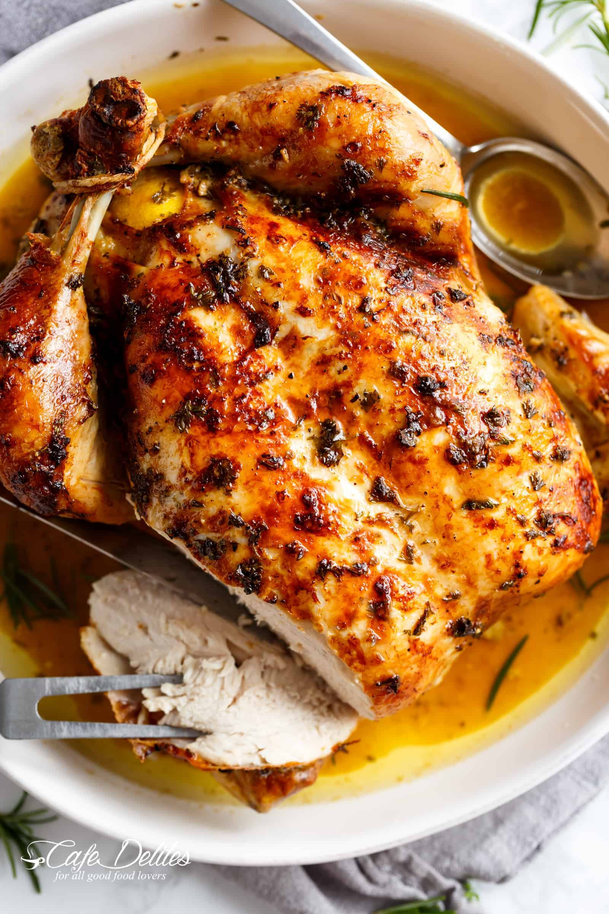

Juicy Roasted Chicken

Description:
This roasted chicken recipe is the way my grandmother used to make it. This method results in the juiciest chicken!
We loved to nibble on the celery after it was cooked.
Ingredients
- Chicken: This recipe starts with a 3-pound whole chicken. If your bird is larger or smaller, you'll need to adjust the recipe.
- Seasonings: This roasted chicken is simply seasoned with salt, black pepper, and onion powder.
- Butter: Butter (or margarine, if you prefer) locks in moisture and gives the seasonings something to adhere to.
- Celery: Stuff the chicken cavity with celery for subtle vegetal flavor. Plus, the celery will release even more moisture as the chicken cooks.
Steps
- Preheat the oven to 350 degrees F (175 degrees C).
- Place chicken in a roasting pan; season generously inside and out with onion powder, salt, and pepper. Place 3 tablespoons of butter in chicken cavity; arrange dollops of remaining butter on the outside of chicken. Cut celery into 3 or 4 pieces; place in the chicken cavity.
- Bake chicken uncovered in the preheated oven until no longer pink at the bone and the juices run clear, about 1 hour and 15 minutes. An instant-read thermometer inserted into the thickest part of the thigh, near the bone, should read 165 degrees F (74 degrees C).
- Remove from the oven and baste with drippings. Cover with aluminum foil and allow to rest for about 30 minutes before serving.